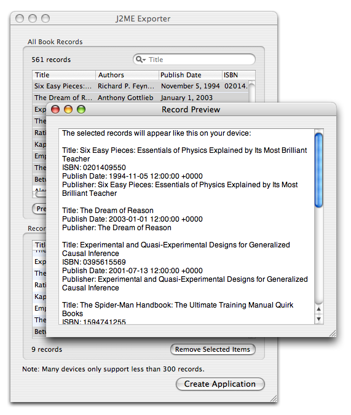

Exporting Your Collection
Books makes it easy to take your data with you wherever you go. (Simply go to the File→Export menu and select your preferred export format.) This is accomplished with export plugins. There are several informal main types of export plugins: file, service, and device.
File exporters take your book information and generate a new file on your local machine. This may be as simple as an XML version of your collection, a tab-delimited format suitable for loading in spreadsheets or databases, or a PDF file for printing. On the end, you may export your collection as a full website consisting of many files and images.
Service exporters export your book data to online services such as book swapping sites. These typically will not create a local file, but they often do ask you for your username and password for connecting to the service in question. These plugins can connect to sites such as BookMooch and WhatsOnMyBookShelf.
Finally, device exporters help you put your book collection on a portable device. Books can export your collection as a set of iPod notes. There is also a plugin (that you must download using the Plugin Manager to put your collection on your Java-compatible (J2ME) mobile phone. There is a similar plugin for Pilot-DB equipped Palm devices.

The J2ME Exporter
Did You Know?
We are always looking to expand the export formats that Books supports. If there is one that you would like that we currently don't support, let us know.